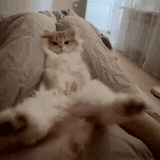
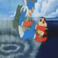
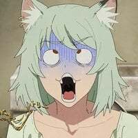
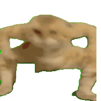
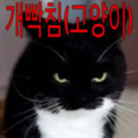

크아아아아아악
크아아아아아악




개너무하네 ㅋㅋㅋㅋㅋ
오늘도 사탄이 실직했습니다
입이랑 손이 닿는데 왜 안떼는거지
풍뎅이류는 떼려할수록 갈고리발톱으로 더 단단히 고정함. 잡아당기면 아파
근데보다보니까 ai일수도 있겠다는 생각이 갑자기 듦
정 떼고싶음 분무기로 물뿌리면되지안ㅅ나
고양이가 분무기를 지 부랄에 어캐 물뿌림?
잘 뿌르면 되지
진짜 나빠 ㅋㅋㅋㅋㅋ
Ai잖아
ㅋㅋㅋㅋㅋㅋㅋㅋㅋㅋㅋㅋㅋㅋㅋㅋㅋㅋㅋㅋ
만~붕

좆간 ㅋㅋ
근데 땅콩 보면 딱밤 때리고싶긴해ㅋㅋ


바로 똥스키타네 ㅋㅋㅋ



뽕실뽕실

갑자기 깡을 추네

ㅈㄴ너무하네 ㅋㅋㅋㅋ